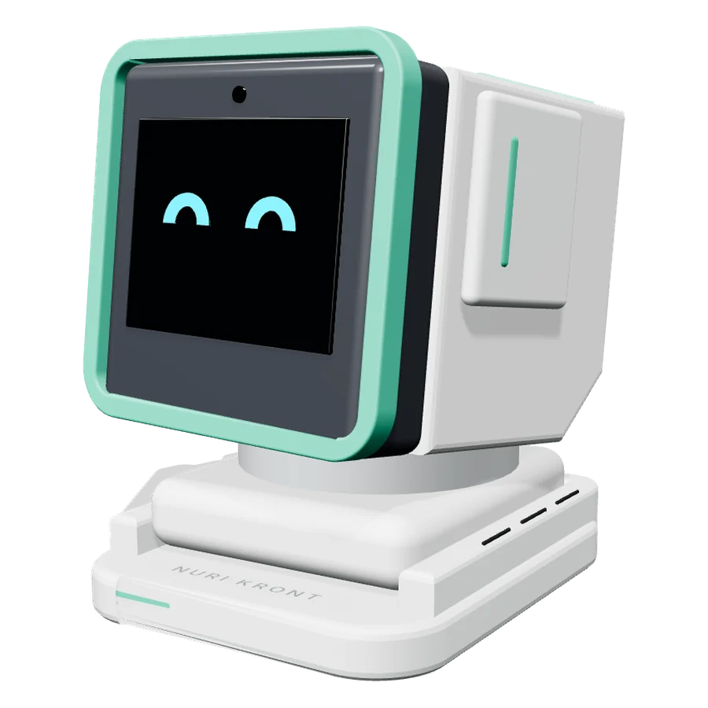
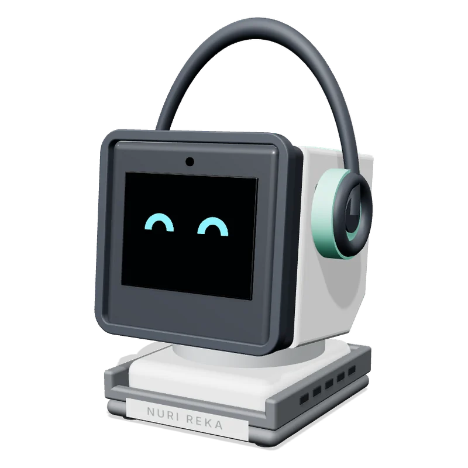
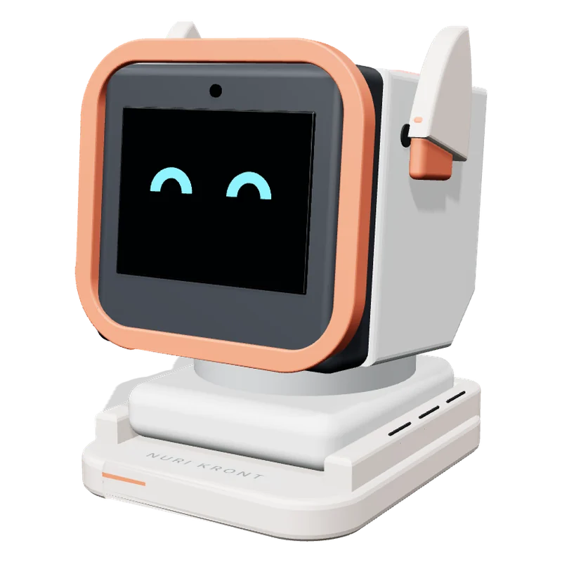

Rakan belajar yang sabar
Tunjukkan di mana saya salah.
- Petunjuk langkah demi langkah, bukan sekadar jawapan
- Latihan bertutur dalam Bahasa Melayu, Inggeris, Mandarin, Jepun
- Kuiz dan pemasa belajar
Teman AI kecil untuk meja anda, direka untuk membantu anda belajar, menyambut pelanggan, mengurus hari anda dan bertanya khabar orang tersayang. Dibina atas M5Stack StackChan K151, memakai sut pilihan anda, dengan namanya diukir pada dock.

Perkakasan sebenar dan terbuktiM5Stack StackChan K151 asli, dengan kamera, mikrofon, sentuhan dan pergerakan dua paksi.
Mengecas sambil bekerjaLetak di atas dock. Palam USB-C dock terus masuk ke port pengecas K151.
Nama pilihan andaSetiap dock diukir dengan NURI dan nama teman anda. Percuma.
Ini bukan empat model atau empat pelan. Setiap NURI berkongsi perkakasan dan perisian yang sama, jadi anda boleh guna untuk semuanya dalam hari yang sama. Tiada apa perlu dibuka kunci.
Tunjukkan di mana saya salah.
Selamat datang! Nak semak servis atau ambil nombor?
Apa paling penting hari ni?
Selamat pagi. Nak telefon anak?
Dan banyak lagi. Pembantu kerja sekolah, penyambut di kedai, pemasa belajar, pencerita sebelum tidur, kawan di meja. Kegunaan NURI hanya terhad pada kreativiti anda.
Setiap kegunaan dibangunkan secara berperingkat dan ditanda Konsep sehingga siap dibina dan diuji. Hanya ciri yang telah diuji akan ditawarkan.
Animasi konsep pendek menggunakan model 3D yang sama seperti laman ini, dengan suara yang dijana AI. Hidupkan bunyi untuk dengar NURI. Ia menunjukkan bagaimana NURI direka untuk membantu; ciri-cirinya masih dalam pembangunan.
Beri NURI nama, suara dan cara bercakap yang anda suka. Kemudian sambungkan ke AI kegemaran anda, seperti ChatGPT atau Claude, supaya perbualan yang anda sudah biasa kini ada wajah di atas meja. Makin kerap berbual, makin NURI kenal anda.
Konsep · ciri yang dirancangChatGPT ialah produk OpenAI dan Claude ialah produk Anthropic. NURI tiada kaitan dengan kedua-duanya. Menyambung servis AI mungkin memerlukan akaun anda sendiri dan tertakluk pada terma serta harga penyedia tersebut.
Pilihan sengaja ringkas. Setiap bahagian direka untuk dipasang pada lubang pemasangan sedia ada K151, tidak menutup sensor, port dan lubang udara, serta tidak menghalang pergerakan penuh robot. Semuanya disemak dalam model 3D kami; ujian muat fizikal seterusnya.

Bingkai muka nipis dan panel sisi lembut. NURI untuk setiap hari.

Cawan sisi gaya fon kepala dengan lengkung atas yang terbuka. Untuk belajar dan bekerja.

Bingkai bulat dan telinga sisi kecil. Mesra di rumah dan di kaunter.

Dulang rendah yang tak menonjol di atas meja. Letak NURI dan ia mengecas sambil bekerja.

Mangkuk cetek dililit cincin anyaman nipis, macam sarang kecil. Celah antara cincin membolehkan udara mengalir ke tapak.
Tempahan belum dibuka. Servis AI awan mungkin ada kos berasingan; caranya akan disahkan sebelum pelancaran.

Dua aksesori dalam pembangunan. Kedua-duanya tidak wajib untuk guna NURI. Harga akan diumumkan selepas prototaip siap.
Dua pembawa boleh pakai dalam pembangunan, supaya anda boleh berbual dengan NURI sambil berjalan. Kedua-duanya memegang NURI pada tapaknya dalam cradle berkunci, mengecasnya dari bateri kecil dan membiarkan kepalanya bebas berpusing ke arah anda.
Di luar, NURI bersambung melalui hotspot telefon anda. Bukan untuk digunakan semasa memandu atau berbasikal. Kesesuaian, berat, hayat bateri dan keselamatan akan diuji sebelum dijual.
Setiap bahagian sut dan dock dimodelkan berdasarkan fail struktur K151 yang diterbitkan M5Stack, kemudian disemak dengan zon sentuh, skrin, port, lubang udara dan pergerakan penuh robot.
Ukuran diambil dari fail struktur K151 yang diterbitkan M5Stack. Paksi dongak masih anggaran sehingga diukur pada unit sebenar. Baca panduan reka bentuk (Bahasa Inggeris).
Dua helaian ringkasan untuk dikongsi: produk dan pilihannya, kemudian reka bentuk praktikal dan add-on. Dijana dari model 3D yang sama seperti laman ini (dalam Bahasa Inggeris).


Tempahan belum dibuka. Mesej kami di WhatsApp untuk masuk senarai batch pertama, bertanya atau minta demo. Tiada bayaran diperlukan.
Belum lagi. NURI masih dalam pembangunan. Unit pertama akan dikeluarkan dalam batch kecil selepas sut dan dock diuji muat pada robot K151 sebenar. RM999 ialah harga sasaran. Mesej kami di WhatsApp untuk masuk senarai batch pertama.
Ia empat cara guna NURI yang sama, bukan empat produk. Setiap NURI dapat ciri yang sama bila ia dikeluarkan. Anda tak perlu bayar untuk buka sesuatu kegunaan.
Boleh. K151 mengecas melalui port USB-C di tapaknya. Kedua-dua dock ada palam USB-C tetap yang sejajar dengan port itu, jadi NURI terus berfungsi di atas meja sambil mengecas.
Cara mengecasnya sama. Slim Dock ialah dulang rendah bertepi bulat dan disertakan dengan setiap NURI. Nest Dock ialah mangkuk cetek dililit cincin anyaman, tambahan RM50. Kedua-duanya ada ukiran NURI + nama secara percuma.
Ia direka supaya tidak. Bahagian sut dipasang pada lubang sisi sedia ada K151 dan tidak menutup zon sentuh atas, bar lampu LED, skrin, kamera, port USB-C sisi dan butang kuasa. Setiap bahagian disemak dalam model 3D kami dengan pergerakan penuh robot, dan akan diuji pada robot K151 sebenar sebelum dijual.
Ciri suara dan AI NURI menggunakan servis awan yang ada kos operasi. Sama ada ia termasuk, langganan kecil atau guna kunci API anda sendiri akan diputuskan dan dinyatakan dengan jelas sebelum jualan.
Kedua-duanya diambil kira, dengan lebih berhati-hati. Penggunaan kanak-kanak memerlukan kawalan penjaga dan privasi yang ketat. Butang bantuan Companion hanyalah kemudahan, bukan alat perubatan atau kecemasan.
Tidak. Cipta Robo ialah studio bebas dari Malaysia. NURI dibina atas M5Stack StackChan K151; terma penjualan semula dan penjenamaan sedang disahkan dengan pembekal.